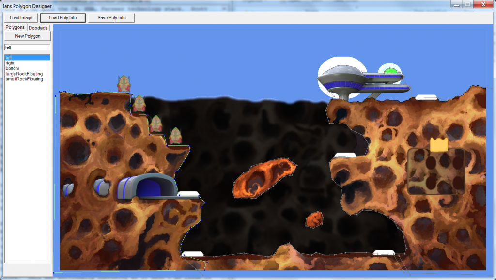
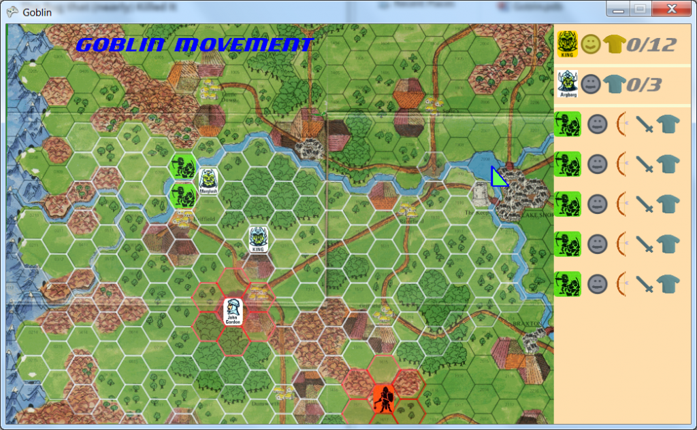
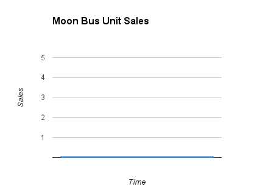

Aug 15, 2013MoonBus Post MortemThe BeginningAround January of 2012 a friend and I were talking about making a game together as a hobby. I came up with the idea that is Moon Bus, and in an effort to explain my idea to my friend I slapped together a prototype. My friend helped me generate lots of ideas for the game but his interest quickly waned. He initially contributed some code but it turned out this was really going to be a solo project. Over the previous couple of years I had put together lots of prototypes and I decided it was time to finish a game, and Moon Bus had a small enough scope that it seemed possible. I am not sure why I decided to finally finish a game, or how it turned into such a hard set rule, but it turned out to be a driving factor that allowed me to complete the game. TechnologyMy friend Scott whom I met in 2008 is an avid game dev hobbyist. He piqued my interest in game dev and got me into the C#, XNA, Farseer technology stack. Scott also introduced me to Global Game Jam and Ludum Dare (where you make a game in a weekend). As these were the tools I was jamming and prototyping in, they became the base for Moon Bus. In my time after work and on weekends I managed to hash out the basic game play. (As a side note Scott also got me into modern board games, which I am now addicted to.) The Level EditorThe levels are not based on any sort of tiles or composite pieces, so every collidable surface has been manually crafted as a polygon. The first level polygon I created was done by mousing over coordinates in paint document of the level, and typing them into the code. This was clearly a ridiculous waste of time and was not something I was going to do again. The first version of the level editor would let me load up the level image (to use as reference) and create and modify the polygons that represented the collidable parts of the level. I also added the ability to place "items" into the level editor, such as spawn points, the bus stop locations, and the score board. Now that the map editor is done the only hard part of making a new level is drawing it. As a bonus the map editor was used to create the polygon shapes for collision of the various ship sizes and platforms. The level editor evolved in small bits throughout the whole project, and while it definitely could use some more work, it got the job done. The Bug that (nearly) Killed ItIn the Summer of 2012 I was running into a strange problem, the speed of the ships seemed to have some sort of hidden maximum. This was a game breaking bug and had me going a little crazy. It didn't help that the bug was caused by a change in the new version of the Farseer physics engine. With the new Farseer physics engine you are not supposed to do physics in an area the size of the screen as the number are too big. This was solved by scaling everything down by 100 and then scaling it back up when drawing it to the screen, which made the maximum speed a hundred times larger than it was before. Doing this large mass of extra unexpected work was very demoralizing and I had trouble working on it at all. Eventually I managed to slog through the myriad of changes, breaking lots of features as I plowed through. After fixing this you might expect that I was excited to continue on, but it took it's toll on me and it was a while before I got back into excited developer mode. DistractedAround August I became obsessed with programming a re-creation of the board game Goblin, it ate up about a month of my time before I was able to put it down (there were some issues converting the rules into a computer game anyway) and get back onto the Moon Bus. August is also when I left my job and started working for myself as a full time game developer. My wife and I were moving so she could attend school, and instead of looking for work in our new city I just stayed unemployed. As an aside I learned that it's awkward to title myself as "unemployed", and moved on to using the mildly better term "self employed". The Big PushI had absolutely no clue how hard it was to polish a game. Menus take forever! I spent MONTHS putting in a menu system, a victory screen, resolution options, volume sliders, a ship selection page, a main menu, an options menu, game play tweaks, balancing, intro and extro level stuff, sounds, music, etc. None of these things are that hard, the devil is in the details. It took a couple of weeks to build installers for the game. I developed two mediocre installers before finally trying WiX and finding a lovely XNA template that, with a little nudging, resulted in a good installer. It still takes at least 15 mins to make a release but as only a handful of releases were made it was not worth my time to automate it. Herding CatsThroughout development I worked with four different artists who did most of the art for the game. They were all recruited from the gameDevClassifieds reddit based on their posts. The first two I hired on a revenue share deal, and they both did a couple hours of work before they stopped making time to work on it. The stuff they did was helpful and it did end up in the game, and I can't help but feel that I failed at motivating and involving them. The other two artists were on a half payment and half revenue share deal. They were both amateurs (which was in line with what they were getting paid) but the work they churned out was an improvement to my programmer art. It's a small sample size to say anything definitive, but the fact that they were being paid something, seemed to result in them completing a good amount of work in a reasonable time frame. In my quest for artists I posted a video of the unfinished game on reddit, a musician came forward and offered to replace my voice generated sounds with real ones for $25 (as charity, he is clearly worth a lot more). Adding real sounds resulted in a noticeable improvement to the game feel. The music is also from a reddit post, a musician was giving permission to use their album for free in games! TestingI had been testing here and there but it was around February 2013, over a year since I started, before I finally had some people I hardly knew play the game. The testing was very helpful and I fixed a few key user interface problems and one bug where the space ships could get stuck in corners. ReleaseMy initial plan was to release on Desura and GOG. Desura sent me the following email, and I got a similar one from GOG: "It is not that we are not interested in the game it just does not mesh with our audience. Simply put we have a lot of hardcore players who are interested mostly in single player experiences." Anodyne had recently released with a nice website and the game for sale on a store called Fast Spring. After a day or two of fiddling with Fast Spring store settings I had my own web store set up! I spent a week putting together a website (styling it after Anodyne) and producing a trailer and Moon Bus was available for purchase! MarketingAll of my marketing was post release so that anybody interested could get their hands on a copy of the game right away. I was aware that this is a bad way to generate interest, but my focus was on getting the game out and marketing just didn't seem important. I sent free game codes to about 60 different you tube channels, but due to the multiplayer nature of MoonBus a majority of them didn't have anybody to play with or just weren't interested. The guys over at the indie game promoter did eventually make some videos but it was nowhere near the coverage I was hoping for. I also sent a copy to humble bundle and some other places, and posted on reddit. ReceptionObligatory units sold over time graph: This is ignoring the 8 friends and family who purchased the game. The time scale here is about 6 months. Hmm. ConclusionThere is the possibility for me to go back and add features like multiplayer or new levels if the mood ever takes me, and I consider it every once in a while. But I have so many other game ideas and it's hard to justify working on a game that's not getting played. I have been keeping my ear to the ground for marketing opportunities, as it would be great to sell a single copy to somebody I don't know. But the fact that Moon Bus didn't sell many copies hasn't really bothered me. I admit that it was a little silly for me to make an offline multiplayer only game. In the end my goal was to make a game, and have a finished for sale product, and I did it. Not only do I have a new portfolio addition, but I also learned a ton which I'm hoping will help me in a long career of game design. Obligatory Moon Bus link (with trailer). Bonus Comments:My wife was confused when I told her I was writing a Post Mortem as it literally translates to something like "after death", though I think the term may actually apply better to Moon Bus than most projects. I would like to make a shout out to thank musician Kai Kennedy who scored and edited a new and improved game trailer. |
There and back again, an OOP tale Basic C# Auto Updater Pillars of Eternity is broken. A Silly Mistake Tweaking The Farseer Engine London Anime and Gaming Convention Sword Controls Update Texture Bleeding MoonBus Post Mortem Optimizing drawing with Sprite Sheets (Android) Space Crazy Prototype Android resource scaler my history with programming |
contact@hernblog.com
Follow @IanMakesGames